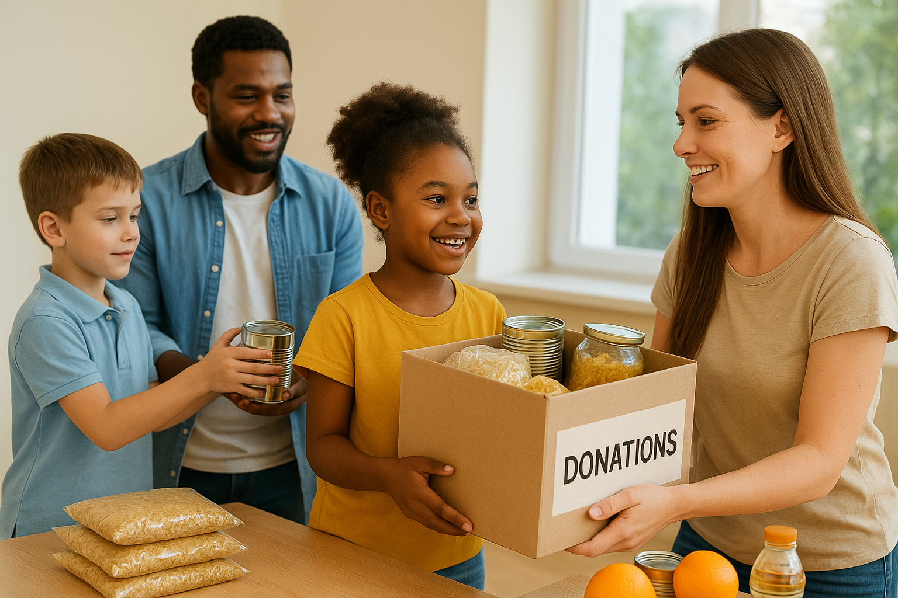

Oficinas de Leitura
Educação
Crianças
Oficinas semanais para estimular a leitura e a criatividade das crianças.
Saiba maisA ONG Pequeno Cidadão desenvolve ações voltadas à educação, cultura e cidadania, com o objetivo de oferecer novas oportunidades para crianças e adolescentes.

Programas educativos, oficinas e suporte às famílias da comunidade.
Oficinas semanais para estimular a leitura e a criatividade das crianças.
Saiba maisAtendimento com voluntários para apoiar nos estudos e tarefas escolares.
Saiba maisFeiras, atividades culturais e encontros para fortalecer a rede local.
Saiba maisVocê pode fazer parte da nossa equipe de voluntários e ajudar a transformar vidas! Basta preencher o formulário na página de Cadastro.
Contribua com doações financeiras ou materiais. Toda ajuda é bem-vinda e faz diferença!
